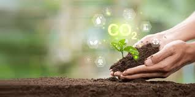
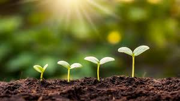

Importância do solo
O solo é um recurso fundamental para a vida na Terra, servindo de base para plantas e alimentos.Ele fornece nutrientes essenciais que sustentam a agricultura e garantem a produção de alimentos.Solo saudável ajuda a manter a biodiversidade, abrigando microrganismos, insetos e outros seres vivos.Ele atua como filtro natural da água, protegendo rios, lagos e aquíferos contra poluição.A camada de solo retém água da chuva, prevenindo enchentes e garantindo irrigação natural.O solo armazena carbono, contribuindo para o equilíbrio do clima e a redução do efeito estufa.Ele é fundamental para o crescimento florestal e a preservação de ecossistemas naturais.

Erosão do solo
A erosão acontece quando a chuva, o vento ou a ação humana removem a camada fértil do solo, diminuindo sua produtividade. O desmatamento e o cultivo inadequado aumentam esse problema, que também provoca assoreamento de rios e prejuízos à fauna e à flora. A prevenção da erosão é vital para manter ecossistemas equilibrados.
.jpeg)
Erosão e seus Impactos
A erosão remove a camada superficial do solo, rica em matéria orgânica. Ela provoca assoreamento de rios, enchentes e perda de fertilidade. O solo exposto perde capacidade de reter água, aumentando a seca em regiões afetadas. Controlar a erosão é essencial para prevenir desastres naturais e garantir alimentos.